Ogni contributo verifica fonti primarie e indica cosa cambia per il destinatario. Mai marketing, mai pareri travestiti.
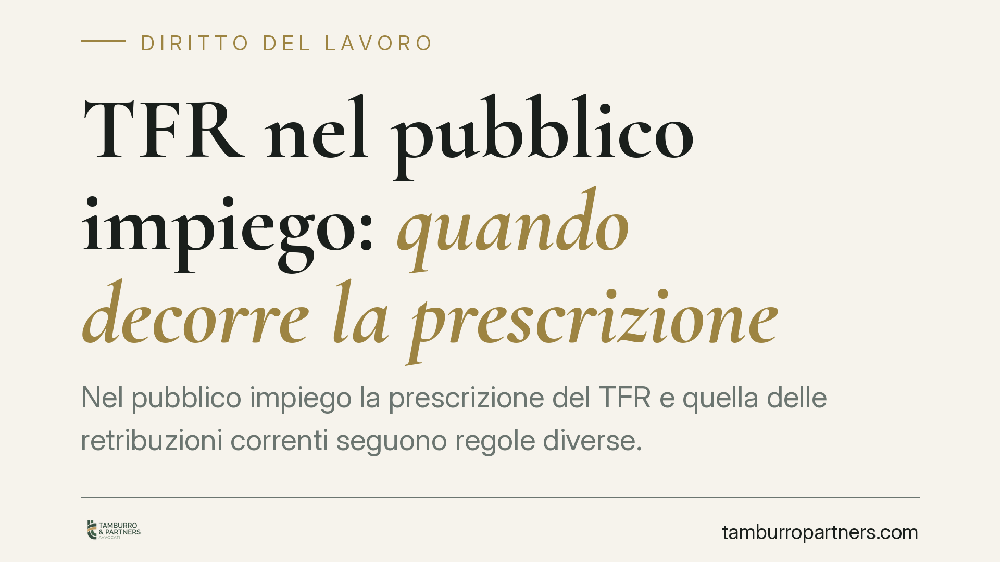
Nel pubblico impiego la prescrizione del TFR e quella delle retribuzioni correnti seguono regole diverse. Il trattamento di fine rapporto matura e diventa esigibile solo alla cessa…
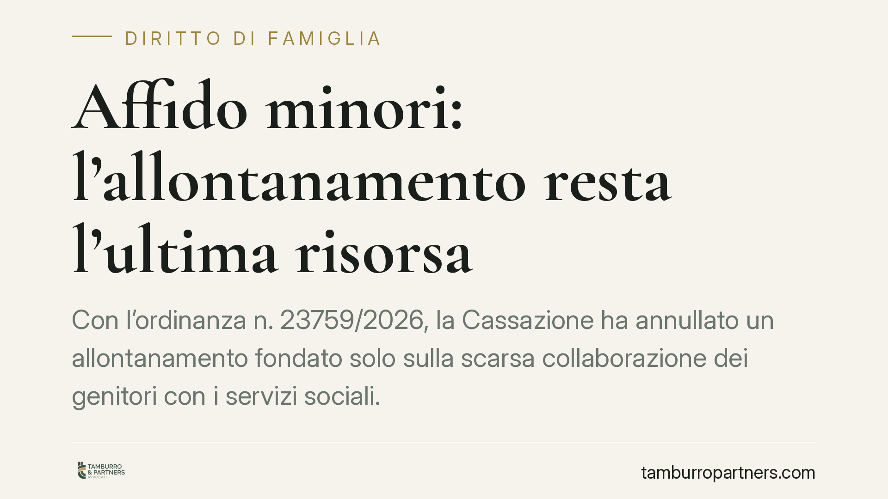
Con l'ordinanza n. 23759/2026, la Cassazione ha annullato un allontanamento fondato solo sulla scarsa collaborazione dei genitori con i servizi sociali. Il messaggio è netto: separ…
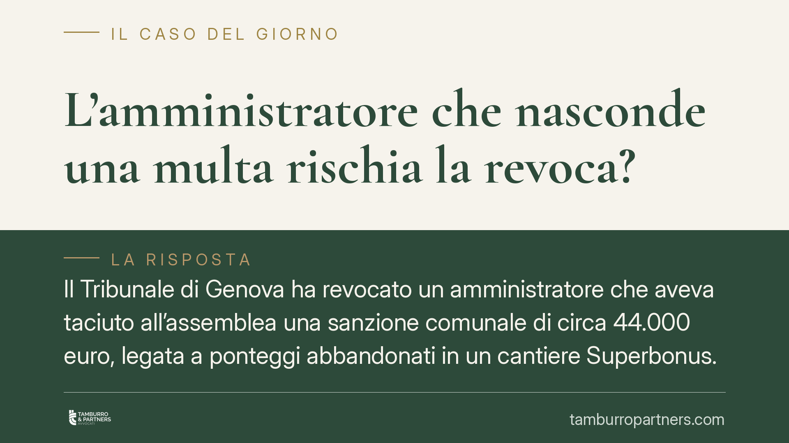
Il Tribunale di Genova ha revocato un amministratore che aveva taciuto all'assemblea una sanzione comunale di circa 44.000 euro, legata a ponteggi abbandonati in un cantiere Superb…
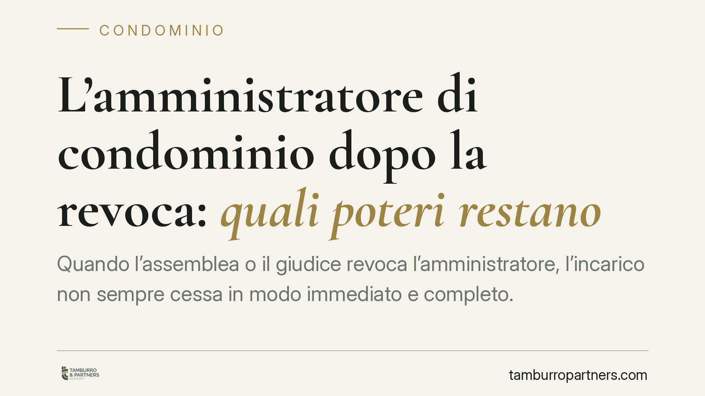
Quando l'assemblea o il giudice revoca l'amministratore, l'incarico non sempre cessa in modo immediato e completo. Fino alla nomina del successore possono residuare poteri limitati…
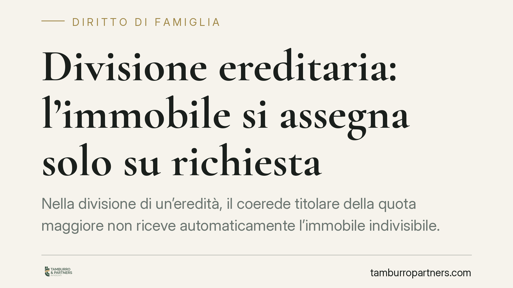
Nella divisione di un'eredità, il coerede titolare della quota maggiore non riceve automaticamente l'immobile indivisibile. Secondo un orientamento consolidato, il giudice può asse…
L'Agenzia delle Entrate ha intensificato gli accertamenti su chi detiene criptovalute senza dichiararle, incrociando i dati trasmessi dagli exchange. Con il recepimento della DAC 8…
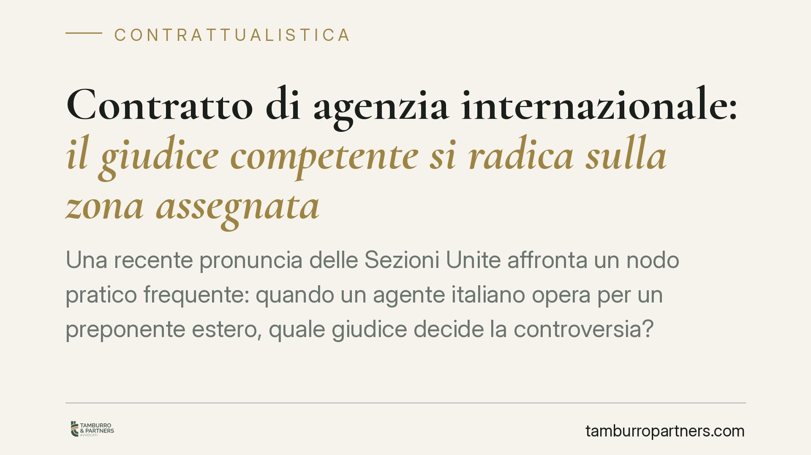
Una recente pronuncia delle Sezioni Unite affronta un nodo pratico frequente: quando un agente italiano opera per un preponente estero, quale giudice decide la controversia? La ris…
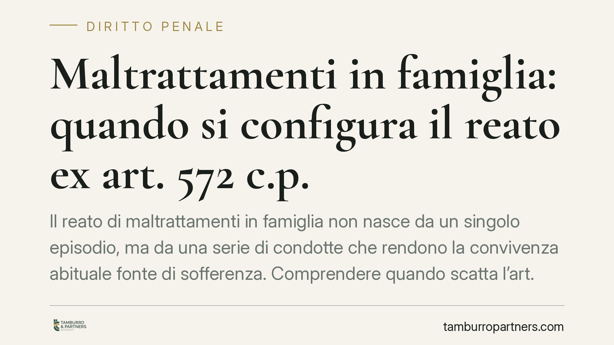
Il reato di maltrattamenti in famiglia non nasce da un singolo episodio, ma da una serie di condotte che rendono la convivenza abituale fonte di sofferenza. Comprendere quando scat…
Comprare casa a proprio nome durante il matrimonio non basta a renderla un bene personale. Secondo la Corte d'Appello di Bologna (sent. n. 1687/2025), la sola dichiarazione del con…
Dopo un divorzio, un genitore che vuole trasferirsi lontano con i figli si scontra con una domanda ricorrente: è libero di farlo? La risposta non è un sì o un no automatico. La leg…
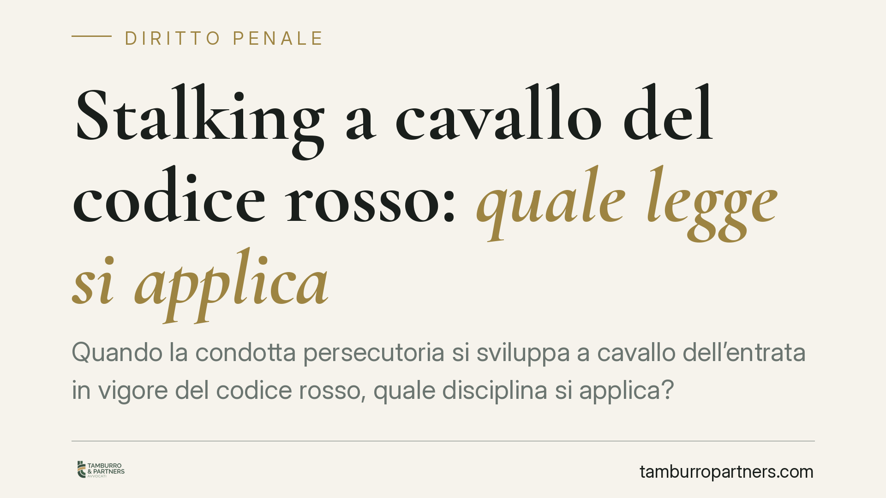
Quando la condotta persecutoria si sviluppa a cavallo dell'entrata in vigore del codice rosso, quale disciplina si applica? La Cassazione ribadisce un principio consolidato: nel re…
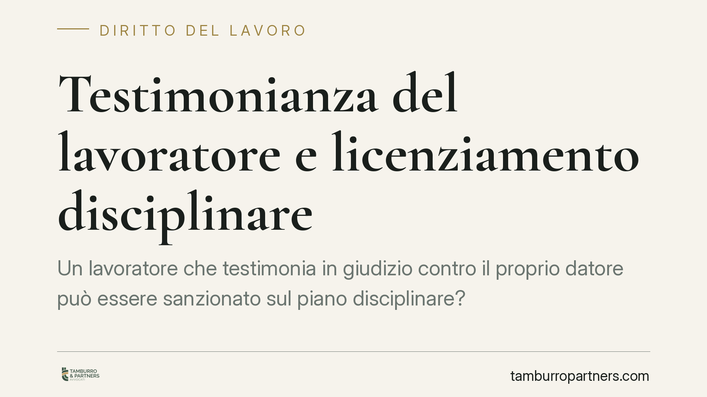
Un lavoratore che testimonia in giudizio contro il proprio datore può essere sanzionato sul piano disciplinare? La giurisprudenza distingue tra l'adempimento di un dovere processua…
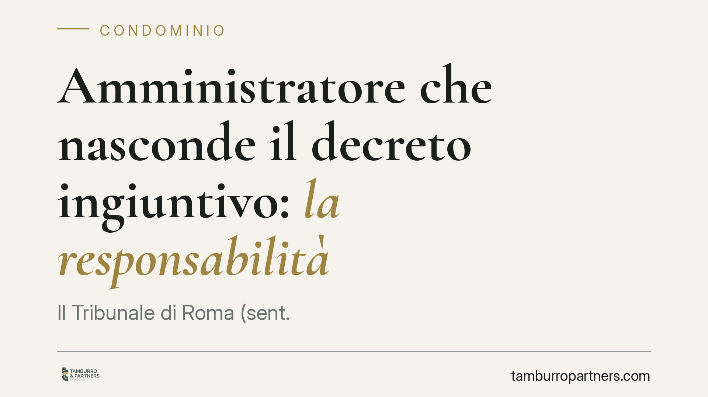
Il Tribunale di Roma (sent. 5083/2026) ha condannato un ex amministratore a risarcire più di 10.000 euro per non aver informato l'assemblea della notifica di un decreto ingiuntivo …
Le Sezioni Unite affrontano un nodo pratico ricorrente nel contenzioso bancario: dichiarata nulla la clausola di deroga ai termini dell'art. 1957 c.c. nelle fideiussioni su Schema …
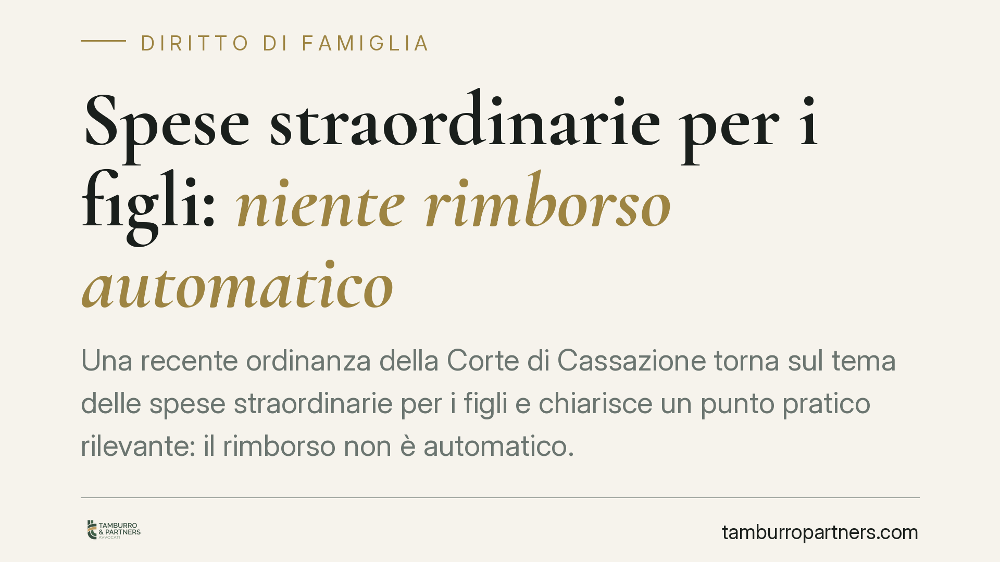
Una recente ordinanza della Corte di Cassazione torna sul tema delle spese straordinarie per i figli e chiarisce un punto pratico rilevante: il rimborso non è automatico. Il giudic…
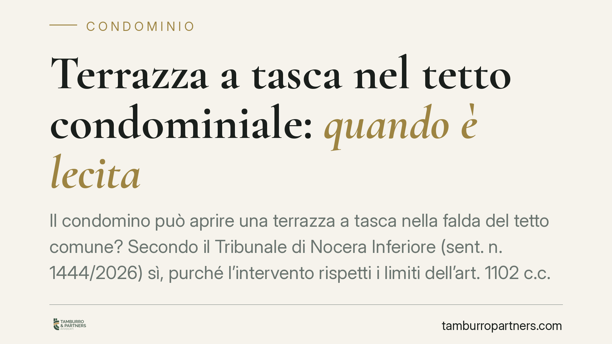
Il condomino può aprire una terrazza "a tasca" nella falda del tetto comune? Secondo il Tribunale di Nocera Inferiore (sent. n. 1444/2026) sì, purché l'intervento rispetti i limiti…
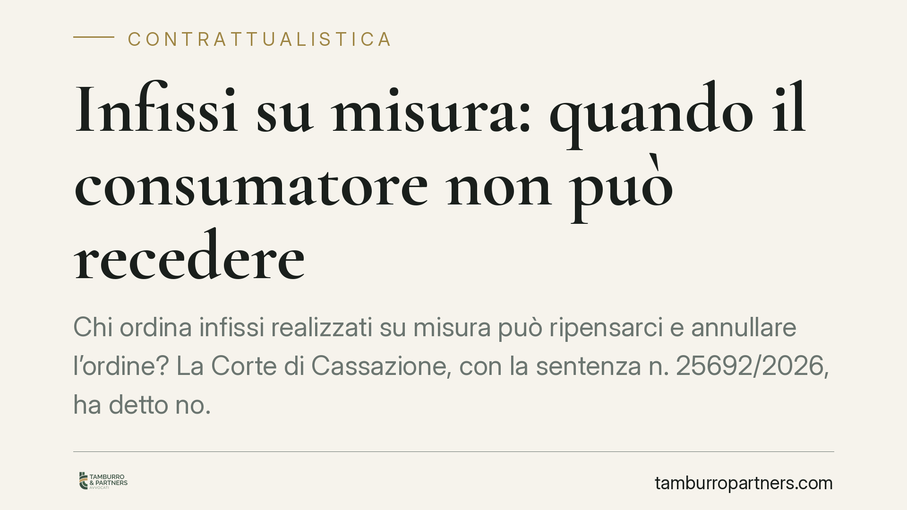
Chi ordina infissi realizzati su misura può ripensarci e annullare l'ordine? La Corte di Cassazione, con la sentenza n. 25692/2026, ha detto no. La fornitura di beni progettati sul…
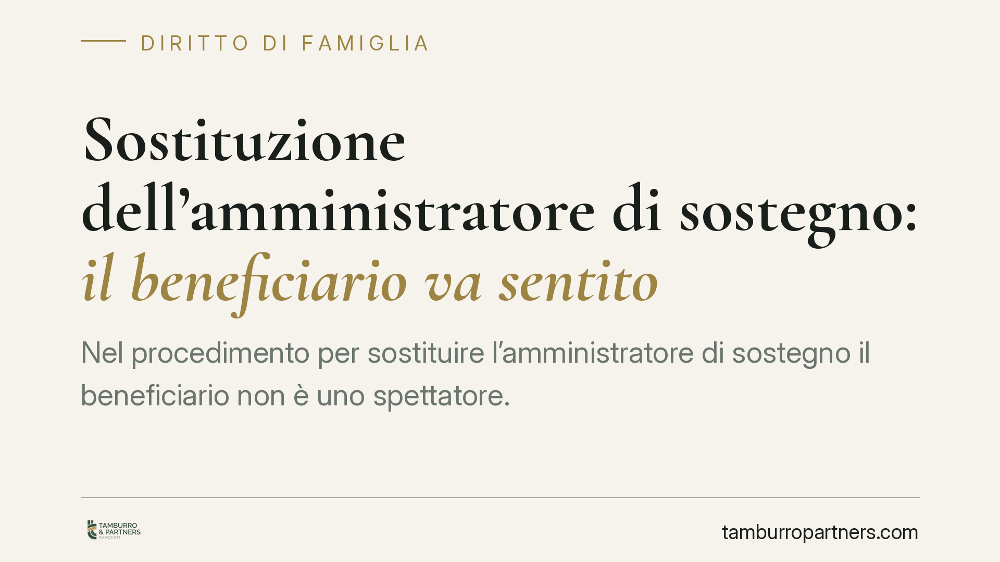
Nel procedimento per sostituire l'amministratore di sostegno il beneficiario non è uno spettatore. La giurisprudenza di legittimità torna a ribadire che l'omessa notifica e la manc…
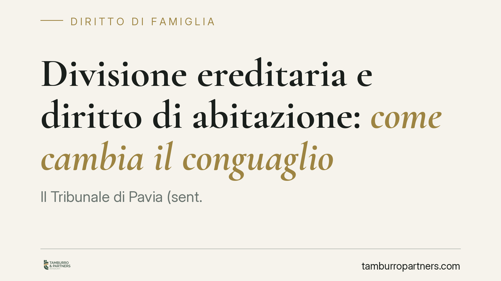
Il Tribunale di Pavia (sent. 770/2026) affronta un nodo ricorrente nelle successioni: come pesa il diritto di abitazione del coniuge superstite quando la casa, indivisibile, viene …
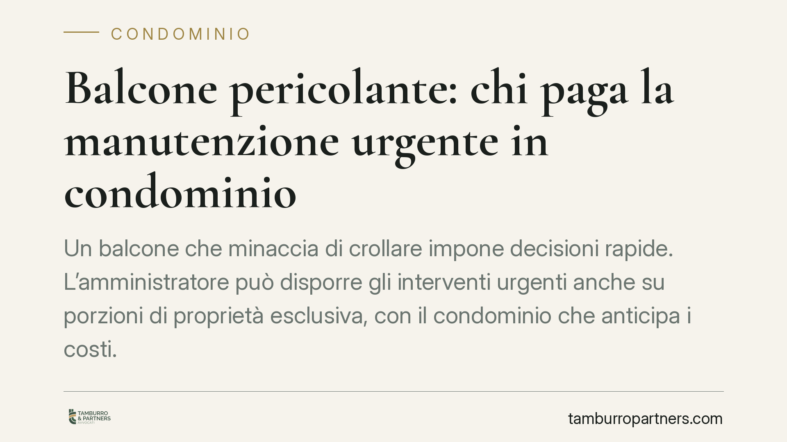
Un balcone che minaccia di crollare impone decisioni rapide. L'amministratore può disporre gli interventi urgenti anche su porzioni di proprietà esclusiva, con il condominio che an…
Con la sentenza n. 6024/2026 la Cassazione penale chiarisce che gli screenshot di chat WhatsApp prodotti dalla vittima sono prova documentale acquisibile nei processi per stalking,…
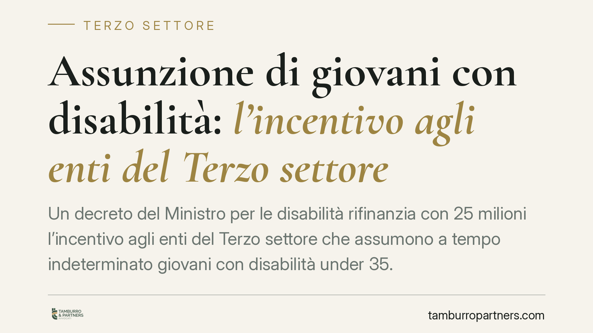
Un decreto del Ministro per le disabilità rifinanzia con 25 milioni l'incentivo agli enti del Terzo settore che assumono a tempo indeterminato giovani con disabilità under 35. La m…
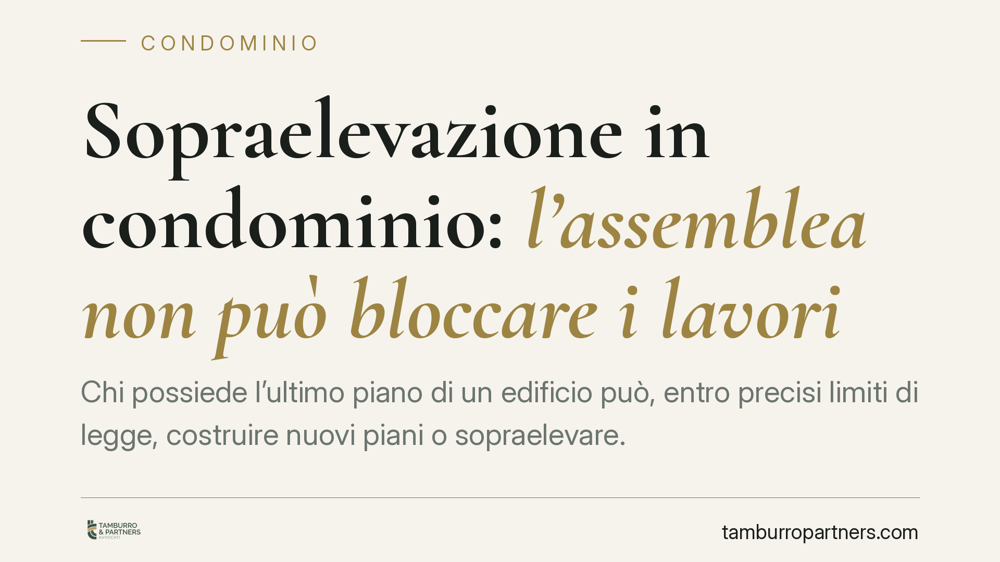
Chi possiede l'ultimo piano di un edificio può, entro precisi limiti di legge, costruire nuovi piani o sopraelevare. È un diritto individuale che l'assemblea condominiale non può c…
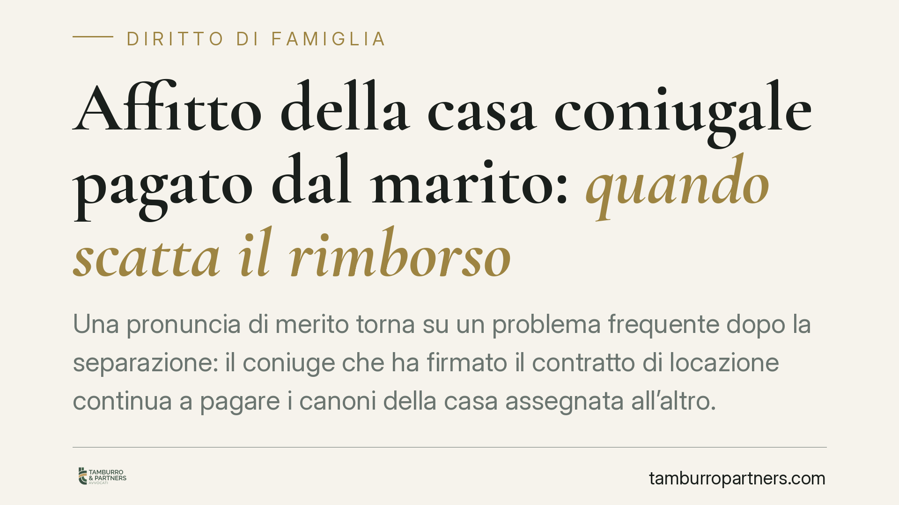
Una pronuncia di merito torna su un problema frequente dopo la separazione: il coniuge che ha firmato il contratto di locazione continua a pagare i canoni della casa assegnata all'…
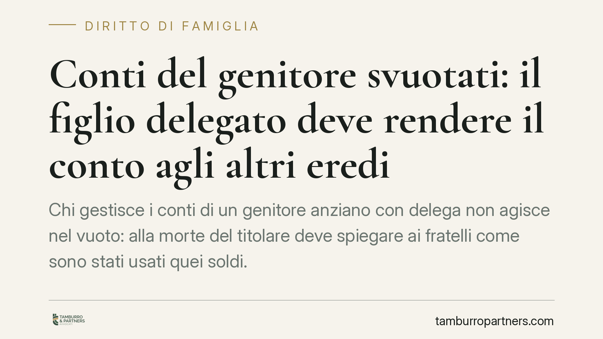
Chi gestisce i conti di un genitore anziano con delega non agisce nel vuoto: alla morte del titolare deve spiegare ai fratelli come sono stati usati quei soldi. La Cassazione ribad…
Il quadro europeo e nazionale in materia di responsabilità da intelligenza artificiale è in movimento. Il tema centrale è come provare il danno quando il sistema è opaco e impreved…
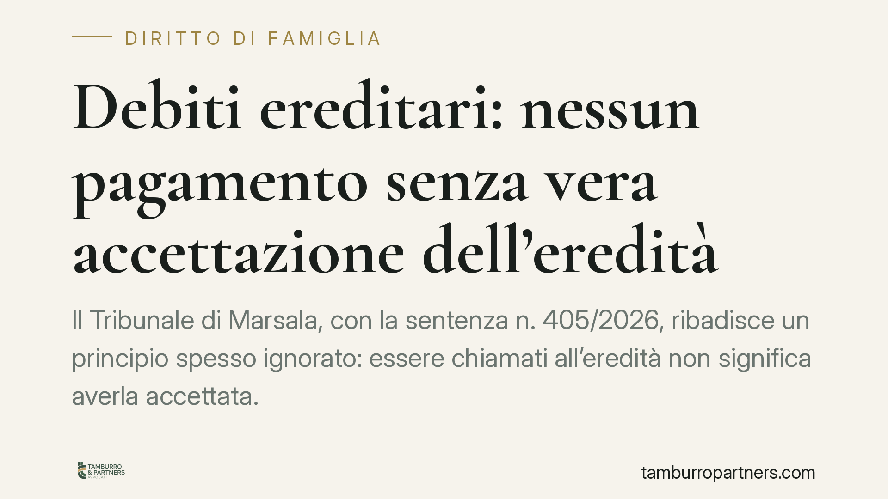
Il Tribunale di Marsala, con la sentenza n. 405/2026, ribadisce un principio spesso ignorato: essere chiamati all'eredità non significa averla accettata. Senza accettazione, i debi…
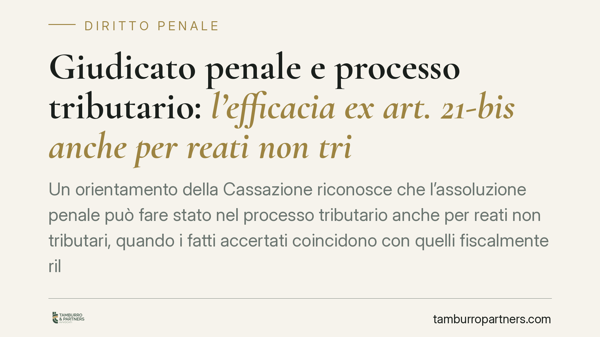
Un orientamento della Cassazione riconosce che l'assoluzione penale può fare stato nel processo tributario anche per reati non tributari, quando i fatti accertati coincidono con qu…
Un'offesa rivolta al responsabile del personale, se isolata e dettata dall'ira, non basta a giustificare il licenziamento in tronco. Una recente ordinanza della Cassazione ha ribad…
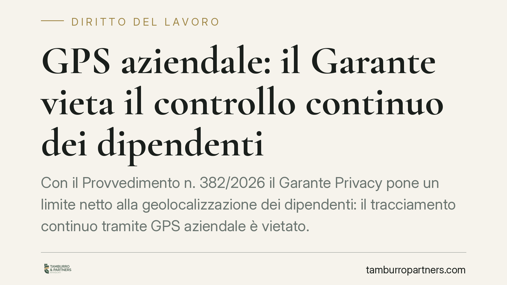
Con il Provvedimento n. 382/2026 il Garante Privacy pone un limite netto alla geolocalizzazione dei dipendenti: il tracciamento continuo tramite GPS aziendale è vietato. I dati rac…